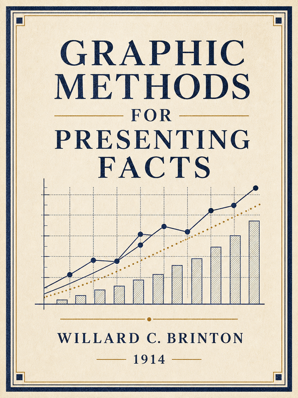
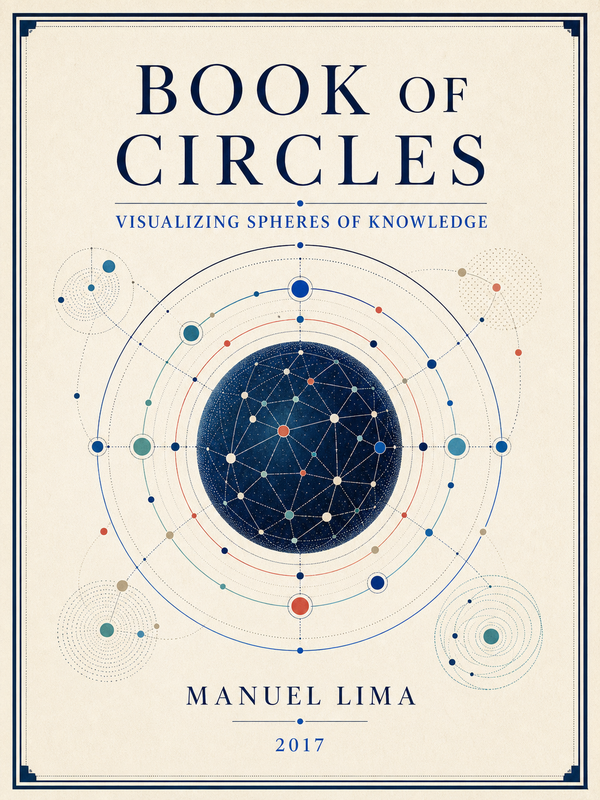

《以图表呈现事实》
Graphic Methods for Presenting Facts
New York: The Engineering Magazine Company, 1914. 实用方法论专著，17 章、254 幅图版。
- 研究问题
- 事实如何用曲线、条形、面积、地图与比较图准确表达。
- 材料与方法
- 以实例、反例和图版比较建立尺度、基线与标注规范。
- 学术贡献
- 记录统计图形转向组织管理与公共沟通的早期实践。
Research structure
核心主题沿“维度—议题—知识元”逐层展开；涌现主题横跨多个维度，单独呈现，不伪装成固定树枝。
1,273 个图谱节点中，目前有 264 个显式层级锚点。结构口径与图谱口径分开标注，未挂载对象不被机械归类。
Distilled monographs
每本书按书目身份、研究问题、材料方法、学术贡献和蒸馏结果介绍。数据可交叉重叠，不以三书相加替代全库总量。

Graphic Methods for Presenting Facts
New York: The Engineering Magazine Company, 1914. 实用方法论专著，17 章、254 幅图版。

Book of Circles: Visualizing Spheres of Knowledge
New York: Princeton Architectural Press, 2017. 视觉文化史与类型学专著，7 个家族、21 种模式。
History of Information Graphics
Cologne: TASCHEN, 2019. 编著式历史图集，9 章、462 页，约 400 件历史案例。
Knowledge graph
节点按知识元类型着色、大小反映连接度；普通关系退居背景，选择节点后只强调相邻路径。维度映射只呈现已显式挂载部分，不机械推断。
图中呈现 KU-to-KU 关系；端点不是知识元的记录仍保留在权威关系索引中。页面及 D3 运行时均可离线加载。
Technical pathway
语义阅读与判断由 Agent 承担；脚本负责索引、校验、dry-run 和受控写回。任何自动化都不直接提升置信度或验证状态。
INTAKE只读归档、哈希与章节映射。
READ逐章抽取、消歧与类型判断。
COMPILE将候选编译为八类知识元。
VERIFYcollect → evidence → dry-run → apply。
ORGANIZE关系、层级、主题与语义补足。
OUTPUT研究产出、回溯与发布门禁。
Current progress
完成事实、运行信号和待审语义工作分开呈现。健康评分说明结构可运行，不等同于逐条学术验收。
可回溯门禁通过，语义独立验证仍按队列推进。
断言均保留来源与 source span。
另有 175 条规则推断关系，保持分层。
覆盖台账和连续性记录通过结构检查。
193 个信号已分类；无待审窗口，弱关联未被自动升级。
5 个优先对象完成审查；1 个无净增量，4 个延后。
25 个对象均进入来源收集队列，未把 QID 当作语义补足。
Next work
优先完成已分诊对象的权威来源收集，再形成 evidence JSONL，经过语义裁决后才进入有限写回。